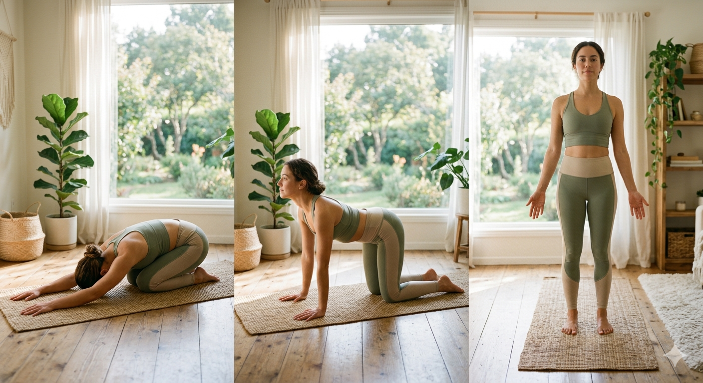
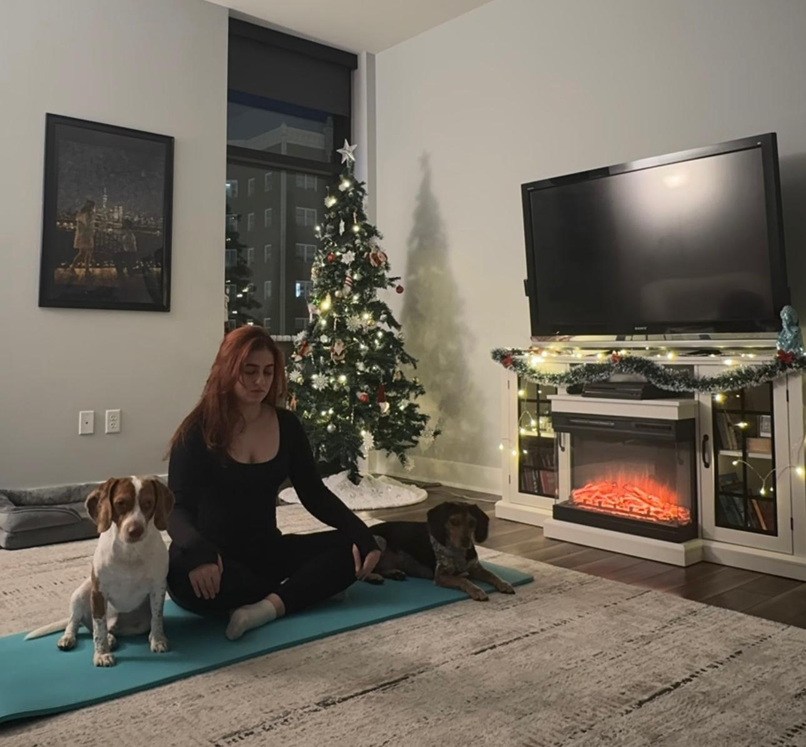

3-Step Morning Routine

I learned that consistency matters more than perfection. Some mornings I practice longer sessions, and other days it may only be five or ten minutes. What matters most is making time for yourself and creating a routine that feels peaceful and enjoyable. Yoga has become more than exercise for me — it is a way to clear my mind, connect with myself, and start each day with positive energy.
If you are new to yoga, beginning with a few simple poses each morning is a great way to wake up both your body and mind.
- Child's Pose: Kneel on the floor, sit back on your heels, and fold forward to rest your forehead on the mat.
- Cat-Cow Stretch: On hands and knees, inhale to arch your back and exhale to round your spine.
- Mountain Pose: Stand tall with feet together, hands at your sides, focusing on steady breathing.
I usually begin with Child's Pose, where I kneel, sit back on my heels, and fold forward to relax and stretch my body. Then I move into Cat-Cow Stretch, slowly arching and rounding my back with my breath to wake up my spine and release tension. I like to finish with Mountain Pose, standing tall and focusing on steady breathing to feel grounded and balanced.

One of my favorite parts of yoga is practicing in the morning with my two beagles nearby. Starting the day with a short yoga routine helps me feel calm, focused, and energized before the day begins. Even just a few minutes of movement and deep breathing can make a big difference.